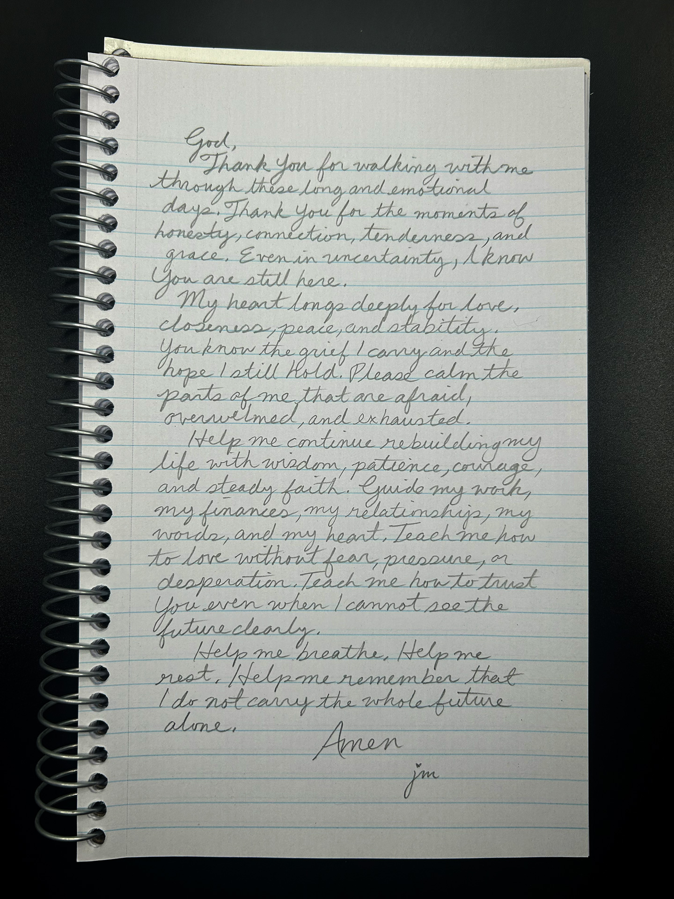

The future
I do not carry the whole future alone.
God,
Thank You for walking with me through these long and emotional days. Thank You for the moments of honesty, connection, tenderness, and grace. Even in uncertainty, I know You are still here.
My heart longs deeply for love, closeness, peace, and stability. You know the grief I carry and the hope I still hold. Please calm the parts of me that are afraid, overwhelmed, and exhausted.
Help me continue rebuilding my life with wisdom, patience, courage, and steady faith. Guide my work, my finances, my relationships, my words, and my heart. Teach me how to love without fear, pressure, or desperation. Teach me how to trust You even when I cannot see the future clearly.
Help me breathe. Help me rest. Help me remember that I do not carry the whole future alone.
Amen. — jm